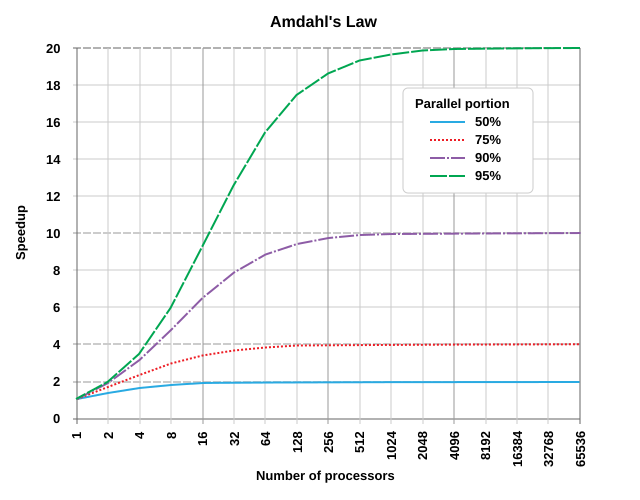

All in One View
Content from Introduction to Performance Analysis and Optimisation
Last updated on 2026-09-22 | Edit this page
Overview
Questions
- Why assess performance in large scientific codes?
Objectives
- Differentiate performance assessment, analysis and engineering
- Explain why is it necessary to benchmark code without relying on exsiting version
This lesson will introduce concept of benchmarking with underlying theory. The main idea is not deploying your code here to analyse, rather it is guiding you how to asset your own code.
Altough there is no standard way to benchmark the code, we will touch fundamentals of benchmkaring and structure a workflow to help a scentist to use in their own process or assetments. Therefore, we will start to introduce key metrics of benchmarking and put them glossary of this course so that you will have a better understanding of benchmarking at the end of the course. Saying that to have a skill to decide which metrics means what and how you can use relavant technics to benchmark and asset your code.
It is assumed that the learner of this course has a limited knowledge of benchmarking, profiling and the algorithms used. Before starting this course, it is assumed that the learner has:
- Has a code to be evaluated.
- Has a pre-defined metric which is a proxy for code performance (e.g. run time, ns per day, etc).
- Has sufficient knowledge of the code to know how to modify compiler flags and algorithms within it.
- Awareness that benchmarking might be specific to the system on which it is performed; running the code on another system might give different performance characteristics.
Have you been already performance analaysis?
Now, take a minute and think of a time in daily life when you compared two ways of doing something to see which was more efficent or faster even if you never called it “benchmarking.”
- Timing two different driving routes to see which actually gets you there faster.
- Watching which supermarket checkout line is moving faster before joining one.
- Comparing two meals how much calorie you will gain according to the your diet.
Each of these is exactly what benchmarking a program does: measuring real performance under different conditions, then using that measurement to decide what to do next.
This lesson aims to create a glossary that covers theory of performance analysis and optimisation. Please open it via Glossary in a new tab and refer back to it as you go through this lesson.
Amdahl’s Law
It can be tricky to understand how much speedup parallelisation you can actually gain after benchmark your code. To figure out that we use Amdahl’s Law. It describes how many processors you keep a problem, the part of the code that should run serially puts a limit on total speedup.

Speedup and Efficiency
Two term we’ll use throughout this lesson are speedup and efficiency.
Speedup compares the time taken on one processor, \(T(1)\), to the time taken on \(p\) processors, \(T(p)\):
\(S(p) = \dfrac{T(1)}{T(p)}\)
Efficiency normalises speedup by the number of processors used, giving a value between 0 and 1 (or 0% and 100%):
\(E(p) = \dfrac{S(p)}{p}\)
Amdahl’s Law predicts the maximum speedup achievable given a fixed problem size, where \(f\) is the fraction of the code that must run serially:
\(S(p) = \dfrac{1}{(1 - f) + \dfrac{f}{p}}\)
As \(p \to \infty\), speedup meets to \(\dfrac{1}{1-f}\).
Is benchmarking the same as performance analysis?
Now, let’s think about a health screening in medicine: a doctor checks your blood pressure, pulse etc for standard checks. If some metrics are not in the ideal region where they should be, it will be issued for further tests. It will then switch to analysis part.
- When you benchmark your code (e.g. measuring \(S(p)\) and \(E(p)\) across different systems), which stage does that belong to assetments or analysis?
- Is “benchmarking” and “performance analysis” the same thing? Why or why not?
1. Benchmarking is assessment. Measuring speedup and efficiency is like taking blood pressure and pulse — you’re recording what happens, not explaining why.
2. No, they’re not the same thing. Benchmarking only tells you that something might be wrong (e.g. speedup is lower than expected). It doesn’t tell you why. Finding the “why” — for example, using a profiler to discover that most of the time is spent waiting on memory rather than computing — is performance analysis, the equivalent of the doctor ordering follow-up tests once a vital sign looks off.
In short: benchmarking is how you assess the code; analysis is how you explain what the assessment found.
- Benchmarking measures how code performs, it doesn’t explain why, and it doesn’t fix anything in the code
- Performance work follows assessment, then analysis, then engineering
- Speedup \(S(p) = t(1)/t(p)\) and efficiency \(E(p) = S(p)/p\) are quantified by Amdahl’s Law, which shows that a code’s non-parallelisable fraction caps its total achievable speedup
- Profiling reveals where time is spent overall; tracing reveals the order in which events happened
Content from Preparation
Last updated on 2026-09-24 | Edit this page
Overview
Questions
- How do we choose a characteristic benchmark of codebase?
Objectives
- Prepare the benchmark case
- Define the benchmark characteristics
In this subsection, we will look at how to prepare a benchmark case to see the performance of the code. It usally calls “pre-assessment” (e.g. defining charctesistics of benchmark, preparing the compiler setup etc). As all domains could differentiate from one to other in terms of algoritmic complexity and behaviour etc, we will treat the code like a black-box and prepare the setup based on some rules. This rules can be checked via a checklist to identify basic informations from code. This informations will help the person that will run the benchmark between the code owner. Because it is not always the case we benchmark our own codes. It generally carries out via external people who might be unfamillar to our domain. Without previous knowledge of code, the checklist will help us to understand underlying characteristics of code and its behaviour on targeting machine.
Checklist
Before starting benchmark the code and analysis it, it is expected to fill the knowledge gap between owner of the code and benchmark analyst. Below points reflects initial checks for code:
- An archive that contains all files,
- Relying on a static files (making sure that the files for benchmarking is not going to be changed during the analysis),
- Include the documentation of benchmark (e.g. how to build and run the code)
- Reduce size of benchmark, however not too small, it should be representative for the case study.
Challenge 1: Is this a good benchmark case?
A main routine of a large scientific code has planned into a benchmark. It only tests that main routine, and it can only run a small problem size.
- According to the checklist above, is this a good benchmark?
- What’s the main thing missing?
1. No, it’s missing two things the checklist asks for.
2. It only tests a main routine,however it worth to check how other routines are behaving in the code. It also can be benchmark with different problem sizes. A good benchmark should cover multiple routines and be configurable to run at different problem sizes.
Designing a Benchmark
All benchmarks do not measure same characteristics of the code. Therefore, we need to design our benchmarks depends on what metrics and characteristics we want to compare and that improve our code accordingly. In this case, you may have no idea where to start designing a benchmark for your code. It is also common people uses benchmarking tools with significant overhead while not having a representative small case of setup. Avoiding all time wasting we recommend you to follow below three stages:
flowchart LR
A["Preparation<br/>File/directory setup, place data,initial conditions etc."] --> B["Iterate steps<br/>(Run program N steps, based on the selected routine)"]
B --> C["Interpretation<br/>Visualize the results and interpret them"]We can not skip correctness even if got successfully run the benchmark. It is expected from a good benchmark performs well in representative benchmark but also needs to be checked via unit tests for their codes. Therefore before collecting the results, it needs to beconfirmed the run computationly correct and accurate.
Setting Environment
To run effectively a good benchmark case, you have to well prepare your working enviroment including compiler setup align with hardware details etc. It could be challenging if you are using several machines and different types of compilers for your benchmark case. Therefore, in this lesson we aim to provide a guidelenss how to structure your directories including compiler setup. So that you will be able to pick your results without worrying about environment changes.
To aim that, we will use a deploy script to handle environment and also compiler setup in this lesson.
Son each unique combination of framework, platform, configuration, and test case gets its own isolated working directory. Therefore switching machines or compilers never risks overwriting or contaminating a previous run’s results.
- Preparing a benchmark starts with closing the knowledge gap between the code owner and the analyst, using a checklist
- A representative benchmark is an application benchmark, not a synthetic one, structured around preparation, iterate steps, interpretation
- Giving each environment and compiler setup in a deploy script helps run and compare them safely
Content from Core Level Benchmarking
Last updated on 2026-10-12 | Edit this page
Overview
Questions
- How do you find out if your code is making good use of a single core?
- What separates a “good enough” measurement from a misleading one?
Objectives
- Explain what core level performance benchmarks are
- Describe how to prepare a good core level benchmark case
- Calculate a core performance ratio and classify it
When we look at the core level performance the first thing we investigate is measure how well our code utilize a single core. Recently, most of the hardwares designed for using vector instructions efficiently where data moves between memory and compute via fast cachechannels. However, whether our code takes advantage of them is entierly different question.
When you use high level performance analysis tools, it is common you will likely see vectorication ratios, memory utulizations and those kind of metrics which can not be a good starting point too look at. To prepare a good benchmark case, we therefore start with hig level numbers. For example, how close does our code get to the machine’s peak performance? Despite the running any heavy profiling tools, these number will tell us whether our code compute bound or memory bound and how it is well utulize the microarcitechture of harware.
The benchmark rubrics
Across every section of this course, we will use three classification:
- Green (≥ 80%): performing efficiently
- Yellow (60–80%): not using the hardware to its full potential
- Red (< 60%): a clear performance flaw
Running a single core benchmark
As we mention in the preparation section, benchmark needs to be set up according to the all environment that we have. To do that we have to care about some criterias:
A representative benchmark case should fit in the cache. You may no idea if the problem you will be running on fits on the cache or not. Having unrealistic results could be a bad benchmark case you desgined and run. To avoid this we have to be sure that the problem size is not too small to sit L1/L2/L3 cache. Before running the benchmark case, it is always necessary that we are checking target system memory according to the our case.
So that we have to know what is peak performance of hardware algin with using single core. Please be aware many HPC systems allows you to run your program on login node initially. However, to be able to benefit from peak performance you have to run the program on a single core.
Also we will need to know what is peak performance of our program where we run executable.
Recall the deploy.sh pattern from the Preparation
episode this is exactly where a core level benchmark run. Once the code
is built, you’d run a peak performance pinned to a single core, rather
than the all program:
Above command pins the application the peakflops
benchmark to a single core on the first socket (S0), via a
data half the size of the L1 cache. This method allows us to avoid
memory effects and pinned on compute.
As we mention earlier it is worth to check you have using weather project code or partition submit your job or you interactively using the hardware. Because sharing resources on login node may cause you have not quite right numbers for result. Therefore we usally reccomend you have a exculise node access while running your benchmarks.
Evaluation
To evaluate core performance, we will need two numbers:
- The maximum single-core peak performance the hardware can theoretically deliver
- The obtained single-core peak performance your code actually achieves
Above command will pin our code’s serial run to the first physical core and measures double precision floating point throughput.
Core performance ratio
The core performance ratio is:
\(C_{core} = \dfrac{\text{obtained peak performance}}{\text{maximum peak performance}}\)
Classified as:
| \(C_{core}\) | Classification | Meaning |
|---|---|---|
| \(C_{core} \geq 0.8\) | Green | Core compute performance is good |
| \(0.6 \leq C_{core} < 0.8\) | Yellow | Not making full use of the hardware |
| \(C_{core} < 0.6\) | Red | Core compute performance is poor |
Note that above is normalised againist scalar peak. Due to some routines can not be vectorized, scalar peak used.
Classify these results.
Three codes were benchmarked for single-core peak performance on the same harware, where the hardware’s maximum peak is 40 GFLOPS/s:
| Code | Obtained performance |
|---|---|
| A | 34 GFLOPS/s |
| B | 28 GFLOPS/s |
| C | 19 GFLOPS/s |
- Calculate \(C_{core}\) for each code.
- Classify each as green, yellow, or red.
- Which code(s), if any, need further investigation?
| Code | \(C_{core}\) | Classification |
|---|---|---|
| A | \(34/40 = 0.85\) | Green |
| B | \(28/40 = 0.70\) | Yellow |
| C | \(19/40 = 0.475\) | Red |
Code A is performing well and does not need further investigation at this level of benchmark. Code B is worth a double check look. It is not clearly broken, but there’s room for improvement. Code C shows a clear issue and should be prioritised for optimisation.
- Core level benchmarking starts with obtained peak performance vs the hardware’s maximum
- A good measurement needs a representative benchmark case larger than cache, exclusive node access, and pinned thread affinity
- \(C_{core} = \text{obtained} / \text{maximum peak}\), classified as green (≥80%), yellow (60–80%), or red (<60%)
- \(C_{core}\) is normalised against scalar not vectorised peak
Content from Intra node level benchmarking
Last updated on 2026-10-16 | Edit this page
Overview
Questions
- How a code scale across a whole node?
- How do we interprate parallelism by using performance analysis tools? #fixme (performance anlaysis tools something meant to default per lesson where added user profiles on Azimuth)
Objectives
- Understanding scalability before running a whole node test
- Distinguish parallesiation of code frantions and identify their scaling
- Providing guidance on code’s behaviour on a pre-defined architecture
- Evaluation of Amdahl’s Law and blancing the performance
After learning how to learn our codes utulize in a single core, now we can dig into node level performance analysis. We also called it “intra node” which means basically inside the node. At this point, we will touch practice of Amdalh’s Law again weather our code make good use of parallelisation or not. To understand this we can benefit from below graph.


Which branch of the decision graph?
Let’s say we have two codes both have plenty of parallel work in principle, yet both scale poorly on a single node. Using the decision graph, decide which branch each one belongs to.
Code A. The code creates millions of very short tasks, each running for only a few microseconds. The profile shows most of the time going into the OpenMP runtime (barrier and overhead functions), and effective CPU utilisation is well below 80%.
Code B. The code creates a moderate number of tasks, and each one contains a loop with a very small critical section. The profile shows a large amount of spin time in the threading back-end, even though all threads look busy.
- Which branch does each code belong to?
- What evidence in the description points to that branch?
Code A: tasks are too small. Concurrency is high, but creating and cleaning up each task costs more than the work inside it. The overhead shows up in the runtime rather than in your own functions, which is why the runtime dominates the profile. A reasonable task should run for at least tens of microseconds.
Code B: tasks serialise each other. The tasks look parallel, but each one briefly locks the others out, so in effect they run one after another. Many short critical sections in a row appear as heavy spin time in the threading back-end.
In both cases the symptom is the same: parallelism exists in theory but not in the measurements. The evidence inside the profile is what separates the two branches.
Coverage
If only a small fraction of the code is parallelised, that fraction limits how well the code scales as you add cores.
Rather than using a node run straight away, we first measure how the code scales, and then ask what that scaling says about how much of the code is actually parallel.
Amdahl’s Law, from Episode 1, models the runtime on \(p\) threads as:
\(t(p) = t(1)\left(\dfrac{f_{intra}}{p} + (1 - f_{intra})\right)\)
Here \(0 \le f_{intra} \le 1\) is the parallel fraction: the share of the single-thread runtime that gets faster as threads are added, and scales perfectly in this model. The remaining share, \(1 - f_{intra}\), is the serial fraction and does not change with \(p\).
Dividing \(t(1)\) by \(t(p)\) gives the speedup, and dividing that by \(p\) gives the efficiency:
\(S(p) = \dfrac{t(1)}{t(p)} = \left(\dfrac{f_{intra}}{p} + (1 - f_{intra})\right)^{-1}\)
\(E(p) = \dfrac{S(p)}{p} = \dfrac{1}{f_{intra} + (1 - f_{intra})\,p}\)
Letting \(p \to \infty\), the speedup can never exceed:
\(S_{max} = \dfrac{1}{1 - f_{intra}}\)
In this lesson, \(s = 1 - f_{intra}\) is the serial fraction. Wherever a threshold such as 0.2 is quoted below, it refers to \(s\), not to \(f_{intra}\).
Suppose you want to keep efficiency at or above 80%. Setting \(E(p) \ge 0.8\) and rearranging gives a limit on the serial fraction:
\(s \le \dfrac{0.25}{p - 1}\)
| Threads \(p\) | Largest serial fraction \(s\) for \(E \ge 80\%\) |
|---|---|
| 4 | 8.3% |
| 8 | 3.6% |
| 16 | 1.7% |
| 64 | 0.4% |
A code that is 98% parallel looks excellent, yet it falls below 80% efficiency on 16 threads. This is why a scalability study should come before an exculisive node run.
Calibration
Now, we can look at rearranging the speedup formula for \(f_{intra}\) gives:
\(f_{intra} = \dfrac{p\,(S(p) - 1)}{S(p)\,(p - 1)}\)
Here is an example with \(t(1) = 100\) s:
| \(p\) | \(t(p)\) [s] | \(S(p)\) | \(E(p)\) | Estimated \(f_{intra}\) |
|---|---|---|---|---|
| 2 | 55 | 1.82 | 0.91 | 0.90 |
| 4 | 32.5 | 3.08 | 0.77 | 0.90 |
| 8 | 21.3 | 4.71 | 0.59 | 0.90 |
| 16 | 15.6 | 6.40 | 0.40 | 0.90 |
The estimate stays at 0.90 for every \(p\). The serial fraction is \(s = 0.10\), and the speedup can never exceed 10.
Let’s suppose the last two runs had given \(t(8) = 26\) s and \(t(16) = 25\) s. The estimates become 0.85 at \(p = 8\) and 0.80 at \(p = 16\). The estimated \(f_{intra}\) drifts downwards as \(p\) grows, and hence the model does not represent the code well enough. The runtime has flattened, which is a sign of overhead or lack of concurrency rather than a fixed serial fraction.
Evaluation
- The model fits and \(s\) is small (well below 0.2). The code should scale in principle, and a strong scaling problem is unlikely. Trying different numbers of MPI ranks per node can reduce the effect of the serial part even further.
- The model fits but \(s \ge 0.2\). If the code is parallelised throughout, then major parts are effectively serial, often because of imbalance or excessive synchronisation. Look at balancing next. If major code parts are not inside parallel regions, they simply are not parallelised.
- The model does not fit. A typical sign is a runtime that scales well up to some thread count.
Amdahl’s Law assumes a code is either perfectly parallel or perfectly serial. However, in scientific codes also have small loops and tasks that do not scale, critical sections that force serialisation, and thread overhead that grows with \(p\). Therefore the estimated \(f_{intra}\) is an effective parallel fraction, something you observe, not a literal split of your source code.
- Fitting Amdahl’s Law to measured strong scaling data gives an effective parallel fraction, \(f_{intra} = \dfrac{p\,(S(p)-1)}{S(p)\,(p-1)}\), and the model only fits if this estimate stays stable as \(p\) grows
- Even a small serial fraction costs a lot of efficiency: keeping \(E(p) \ge 80\%\) needs \(s \le 0.25/(p-1)\), so a 98% parallel code already drops below 80% on 16 threads
- When parallel work exists in theory but scaling is still poor, compare theoretical and observed parallelism, then use profiling evidence to separate the causes: unbalanced work, tasks that are too small, or tasks that serialise each other
Content from Inter node level benchmarking
Last updated on 2026-10-21 | Edit this page
Overview
Questions
- How to make good use of multiple nodes?
- How we interpret efficency while increasing size of problem?
Objectives
- Explain why weak scaling is using to assess performance across multiple nodes rather than strong scaling
- Calibrate efficiency for changing problem sizes using the algorithm’s complexity
When we want to scale up our code across to multiple nodes, there are certain things we have to be extra careful. To prioritise, weak and strong scaling are key metrics to have an idea about how our code perform with multiple nodes. In this lesson, we will use nbody simulation to get better understanding of weak and strong scaling aling with relavant performance metrics. To remind our 80% - 60% rule to say if insufficent or if we increase the problem size it get back to a level of 100% - %80 efficiency.
Running MPI ranks on a single node, with physically shared memory, belongs to the intra-node assessment from the previous episode. Only runs over several physically separate nodes count as inter-node.
Challenge
#fixme: add running nbody on multiple nodes example
#fixme: probably some profiling with vtune can go here - not sure how it can squeeze plots, maybe sort of utulization or hotspot?
Workflow
Determine Nbody simulation with following metrics:
- Pick a problem size \(n_1\) for single node.
- Measure the time \(t(1)\).
- Increase the number of nodes and measure the timings.
- Compute \(E_{inter}\) , using the calibrated formula.
- If \(E_{inter} \le 60\%\), increase the problem size and continue from there with the larger setup.
How much can we increase the problem size? It would be as large as the nodes can handle, while keeping each node’s local memory footprint close to what it was for \(n_1\) on a single node.
An illustrative run with \(n_1 = 100{,}000\) and \(t(1) = 200\) s:
| Nodes \(p\) | \(n\) | \(t(p)\) [s] | \(E_{inter}\) |
|---|---|---|---|
| 1 | 100,000 | 200 | 1.00 |
| 2 | 141,421 | 210 | 0.95 |
| 4 | 200,000 | 235 | 0.85 |
| 8 | 282,843 | 290 | 0.69 |
| 16 | 400,000 | 360 | 0.56 |
| 16, larger problem | 600,000 | 520 | 0.87 |
At 16 nodes efficiency falls under 60%, so the problem is enlarged. The bigger problem brings efficiency back above 80%, which is the good behaviour as we mentioned at introdcution of this lesson.
Amdahl’s Law, from Episode 1, fixes the problem size. Gustafson’s Law lets the problem grow with the machine. With \(s\) the serial fraction of the runtime on the parallel system, the scaled speedup is:
\(S(p) = p - s\,(p - 1)\)
With \(s = 0.02\) on 16 nodes, \(S = 15.7\), an efficiency of about 98%. A growing problem hides a small serial part, which is why the N-body code can scale well when its problem is enlarged with the node count. The method in this episode does not use Gustafson’s formula directly. It measures efficiency with the workflow and calibration above.
Preperation
Before running a multinode benchmark case, it will identify algoritmic complexity of problem, so that we’ll increase the complexity to calibrate number of nodes we’ll be using. Let’s say an algorithm’s cost grows as \(O(n^g)\) with problem size \(n\). For \(g = 1\), doubling \(n\) doubles the runtime. For \(g = 2\), it quadruples it. The efficiency becomes:
\(E_{inter}(p) = \dfrac{t(1)/n_1^{\,g}}{\left(t(p)/n_{inter}^{\,g}\right)\cdot p}\)
Here \(n_1\) is the problem size on a single node, \(n_{inter}\) the size on \(p\) nodes, and the timings are raw.
Evaluation
After increasing node counts and measuring the timings, we should collect every node count where we had to increase the problem size. For each one,we’ll take the efficiency of the larger setup and let \(C_{inter}\) be the number of such jumps, \(C^{80\%}_{inter}\) the number that reach 80% or more, and \(C^{60\%}_{inter}\) the number that land between 60% and 80%. Rest of evaluation will be as same as our benchmark rubrics idea at core level benchmarking.
Performance metrics describe observed behaviour. They carry no weighting against the other rubrics (core, intra-node, GPU, I/O), so deciding which way around to tackle first needs input from the people who know the code and its science.
- Weak scaling across nodes starts from one reasonably large problem size
- Efficiency across different problem sizes must be calibrated with the algorithm’s complexity
- A code scales well across nodes if each problem-size increase brings efficiency back above 80%
- #fixme (if we can add a callout or challenge how does that work for hybrid codes if there is an avalible example for it)
Content from GPU level benchmarking
Last updated on 2026-10-22 | Edit this page
Overview
Questions
- How to compare theoretical peak performance of GPU
Objectives
- Making good use of GPU
- Understanding GPU metrics and chosing right metrics for performance analysis
Even though we used performance rubrics accross other lessons, we’ll also use it in GPU level benchmarking to see how the code make a good use of hardware. With Nbody simulation, we’ll try to investigate how the implementation of code benefit from parallelisim of the GPU. To do that we’ll firstly investigate peak perforamnce of our system. :::::::::::::::::::::::::::::::::::::::::::::::::::::::::::::::::::: instructor
We’re targeting to use Nvidia RTX 6000 on Azimuth cloud system as you do not have install any software for this lesson.Y
::::::::::::::::::::::::::::::::::::::::::::::::::::::::::::::::::::::::::::::::
Challenge
Challenge 2: how do you nest solutions within challenge blocks?
You can add a line with at least three colons and a
solution tag.
Figures
You can use standard markdown for static figures with the following syntax:
{alt='alt text for accessibility purposes'}
Callout sections can highlight information.
They are sometimes used to emphasise particularly important points but are also used in some lessons to present “asides”: content that is not central to the narrative of the lesson, e.g. by providing the answer to a commonly-asked question.
Math
One of our episodes contains \(\LaTeX\) equations when describing how to create dynamic reports with {knitr}, so we now use mathjax to describe this:
$\alpha = \dfrac{1}{(1 - \beta)^2}$ becomes: \(\alpha = \dfrac{1}{(1 - \beta)^2}\)
Cool, right?
- Use
.mdfiles for episodes when you want static content - Use
.Rmdfiles for episodes when you need to generate output - Run
sandpaper::check_lesson()to identify any issues with your lesson - Run
sandpaper::build_lesson()to preview your lesson locally
Content from Input Output benchmarking
Last updated on 2026-09-22 | Edit this page
Overview
Questions
- Why assess performance in large scientific codes?
Objectives
- Differentiate performance assessment, analysis and engineering
- Explain why is it necessary to benchmark code without relying on exsiting version
Input Output becnhmarking
This is a lesson created via The Carpentries Workbench. It is written in Pandoc-flavored Markdown for static files anperford R Markdown for dynamic files that can render code into output. Please refer to the Introduction to The Carpentries Workbench for full documentation.
What you need to know is that there are three sections required for a valid Carpentries lesson:
-
questionsare displayed at the beginning of the episode to prime the learner for the content. -
objectivesare the learning objectives for an episode displayed with the questions. -
keypointsare displayed at the end of the episode to reinforce the objectives.
Challenge 1: Can you do it?
What is the output of this command?
R
paste("This", "new", "lesson", "looks", "good")
OUTPUT
[1] "This new lesson looks good"Challenge 2: how do you nest solutions within challenge blocks?
You can add a line with at least three colons and a
solution tag.
Figures
You can use standard markdown for static figures with the following syntax:
{alt='alt text for accessibility purposes'}
Callout sections can highlight information.
They are sometimes used to emphasise particularly important points but are also used in some lessons to present “asides”: content that is not central to the narrative of the lesson, e.g. by providing the answer to a commonly-asked question.
Math
One of our episodes contains \(\LaTeX\) equations when describing how to create dynamic reports with {knitr}, so we now use mathjax to describe this:
$\alpha = \dfrac{1}{(1 - \beta)^2}$ becomes: \(\alpha = \dfrac{1}{(1 - \beta)^2}\)
Cool, right?
- Use
.mdfiles for episodes when you want static content - Use
.Rmdfiles for episodes when you need to generate output - Run
sandpaper::check_lesson()to identify any issues with your lesson - Run
sandpaper::build_lesson()to preview your lesson locally
Content from Conclusion
Last updated on 2026-09-22 | Edit this page
Overview
Questions
- Why assess performance in large scientific codes?
Objectives
- Differentiate performance assessment, analysis and engineering
- Explain why is it necessary to benchmark code without relying on exsiting version
Conclusion
This is a lesson created via The Carpentries Workbench. It is written in Pandoc-flavored Markdown for static files anperford R Markdown for dynamic files that can render code into output. Please refer to the Introduction to The Carpentries Workbench for full documentation.
What you need to know is that there are three sections required for a valid Carpentries lesson:
-
questionsare displayed at the beginning of the episode to prime the learner for the content. -
objectivesare the learning objectives for an episode displayed with the questions. -
keypointsare displayed at the end of the episode to reinforce the objectives.
Challenge 1: Can you do it?
What is the output of this command?
R
paste("This", "new", "lesson", "looks", "good")
OUTPUT
[1] "This new lesson looks good"Challenge 2: how do you nest solutions within challenge blocks?
You can add a line with at least three colons and a
solution tag.
Figures
You can use standard markdown for static figures with the following syntax:
{alt='alt text for accessibility purposes'}
Callout sections can highlight information.
They are sometimes used to emphasise particularly important points but are also used in some lessons to present “asides”: content that is not central to the narrative of the lesson, e.g. by providing the answer to a commonly-asked question.
Math
One of our episodes contains \(\LaTeX\) equations when describing how to create dynamic reports with {knitr}, so we now use mathjax to describe this:
$\alpha = \dfrac{1}{(1 - \beta)^2}$ becomes: \(\alpha = \dfrac{1}{(1 - \beta)^2}\)
Cool, right?
- Use
.mdfiles for episodes when you want static content - Use
.Rmdfiles for episodes when you need to generate output - Run
sandpaper::check_lesson()to identify any issues with your lesson - Run
sandpaper::build_lesson()to preview your lesson locally